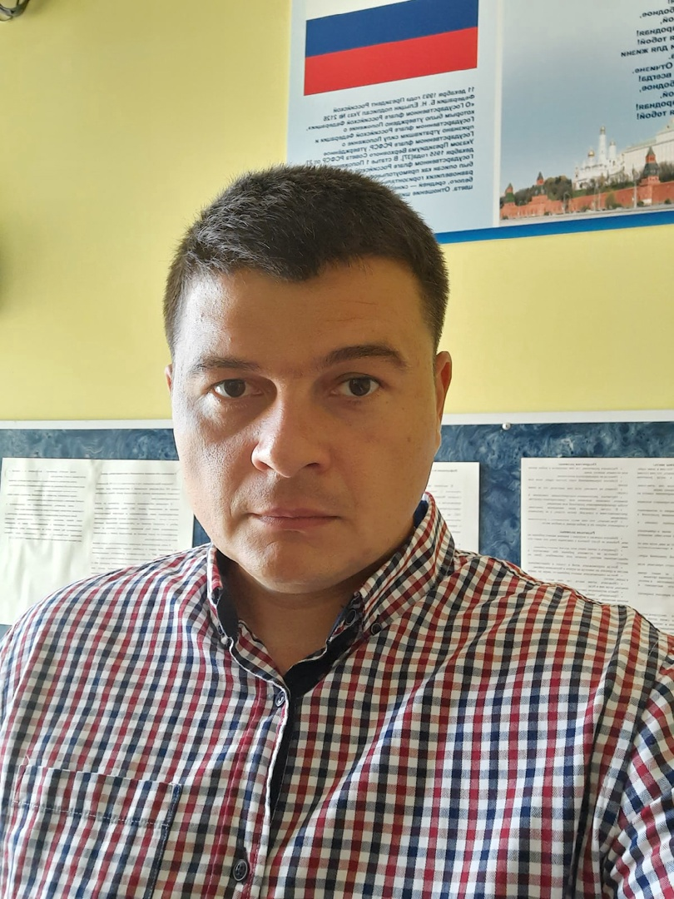
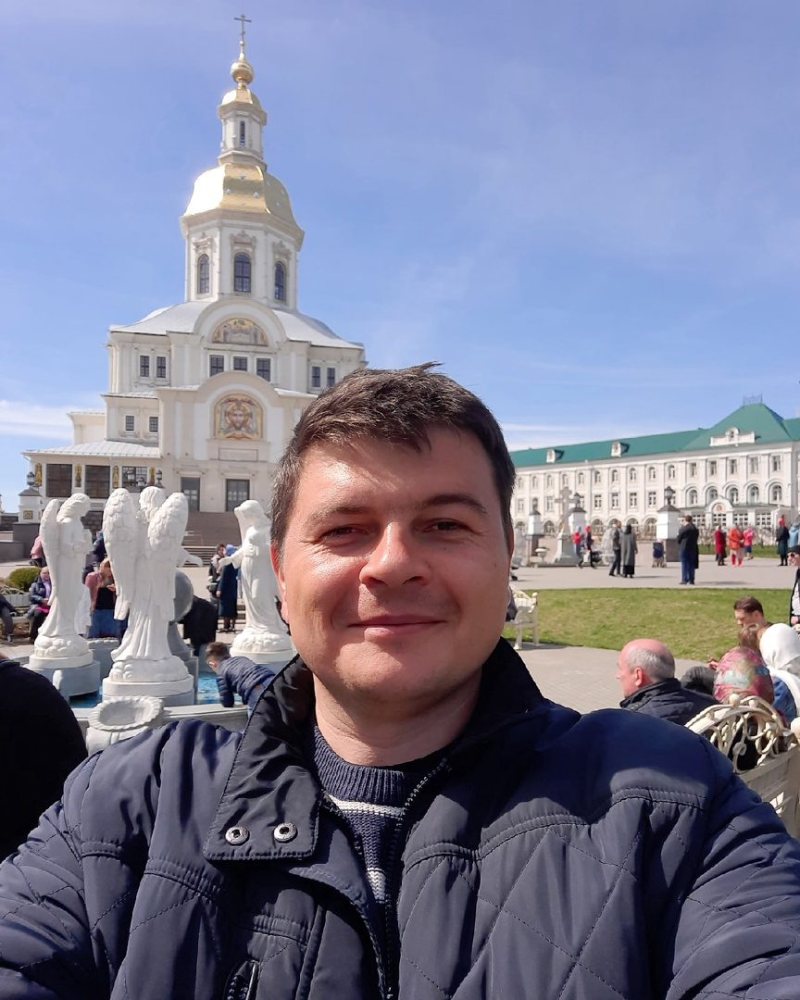
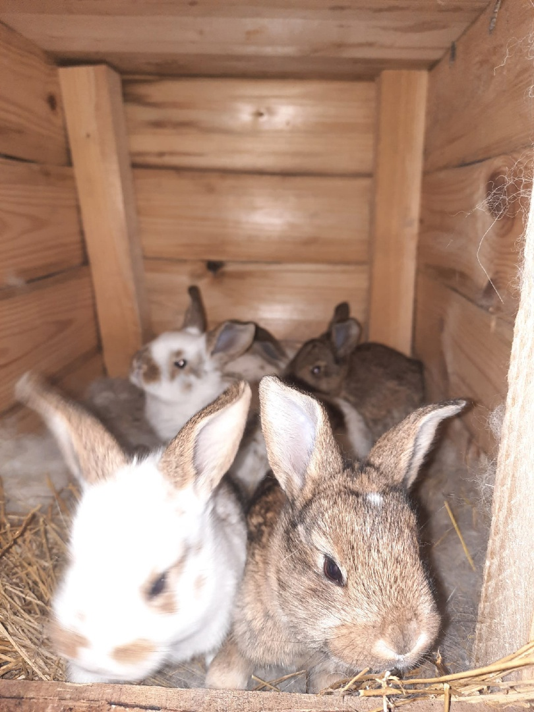
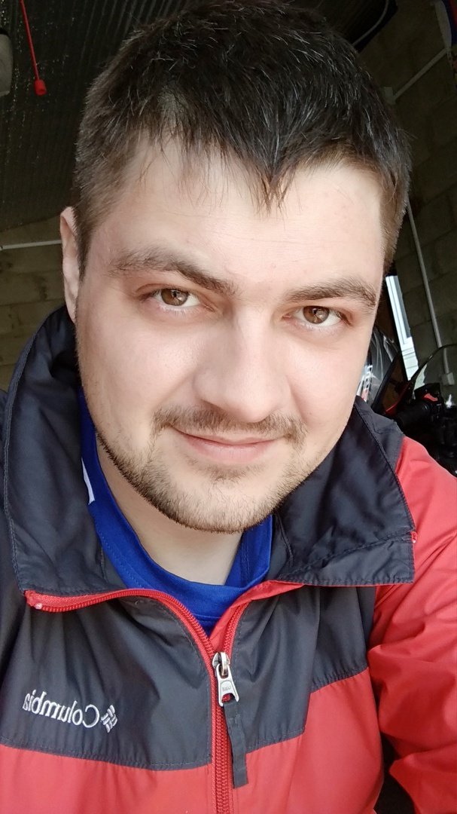
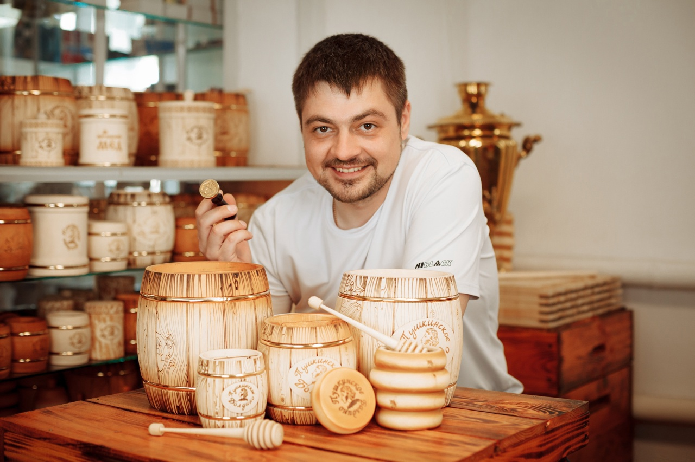
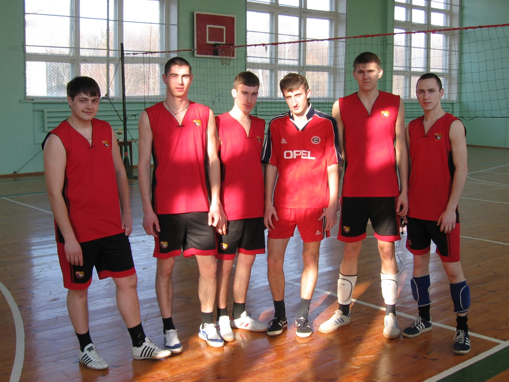
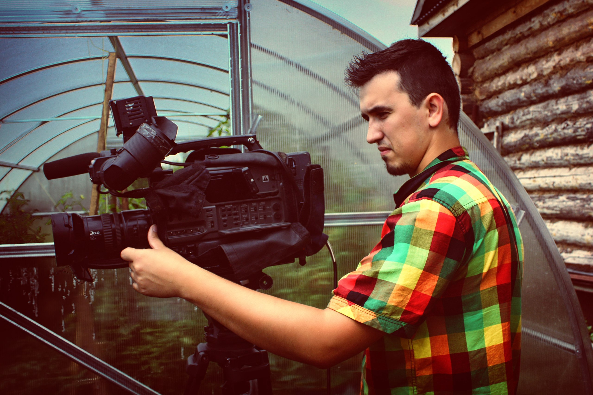

Выпускники 2005 года
И так знакомимся. Выпускник 2005 года Котов Николай.
Это ВТОРОЙ ВЫПУСК специальности, которая в то время называлась Автоматизированные системы обработки информации и управления. Родом Николай из красивейшего места Нижегородской области: Большое Болдино.
❗После колледжа Николай закончил Нижегородский коммерческий институт информационные технологии в экономике (информатик - экономист).
❗Продолжает жить в своем родном крае.
❗И еще Николай отличается завидным постоянством - у него одно место работы: ООО "Племзавод Пушкинское", в должности системного администратора. И мы считаем, что это отличная черта😉!!!
❗ + у Николая есть красивое пушистое увлечение😉😉😉!!!



Мы обратимся к одной из первых групп специальности ВСТРЕЧАЕМ. Выпускник 2007 года Игорь Бородулин. Игорь учился в одной из самых больших по количеству человек в группе специальности (на втором курсе - 32 человека и на выпуске - 32 человека). Родом Игорь их Большого Болдина.
❗С 2005 по 2007 год - работал лаборантом по обслуживанию компьютерных кабинетов в Арзамасском филиале Российского университета кооперации.
❗2007-2013 учился в Арзамасском политехническом институте. Специальность: информационные системы и технологии, квалификация: инженер.
❗2010-2015 ЦРБ Большое Болдино, системный администратор.
❗На сегодняшний день: ИП Бородулин И.В. (Большое Болдино), занимается: продажей и ремонтом персональных компьютеров, обслуживанием компьютерной техники, фотопечатью.
❗А еще с 2018 года Игорь завел ПАСЕКУ и добавил в свою деятельность медовое направление🐝☺!
❗ Да Игорь все время после выпуска из колледжа работал по специальности и надеемся, что колледж действительно стал стартовой точкой. И еще мы знаем об его увлечениях: это мотоциклы и волейбол!
Очень приятно встречать своих выпускников, спустя какое-то количество лет. Ждем в гости и всегда рады видеть👍🏻!!!!!



Итак знакомьтесь: Дмитрий Полушкин выпускник 2010 года. Дмитрий имеет в своем арсенале два диплома нашей специальности. 2009 году - диплом техника (Арзамасского техникума потребительской кооперации), а 2010 год диплом с ОТЛИЧИЕМ старшего техника (повышенный уровень уже Нижегородского экономико-технологического колледжа). Именно в этот год произошло переименование в колледж😉!
❗В 2019 году Дмитрий закончил Московский финансово-юридический университет. Специальность: Прикладная информатика (Бакалавр).
❗С 2005 года еще в процессе учебы и по сегодняшний день, Дмитрий периодически выступает в роли внештатного резервного сотрудника редакции Газеты «Арзамасская правда» в должностях: дизайнер, системный администратор, фотограф.
❗2009-2010 проработал лаборантом Политехническом институте на кафедре Машиностроения
❗ С 2010 по 2018 годы работал на телевидение Арзамасского края (ТАК), видеооператор.
❗ С 2018 года завел канал в Ютубе «Гараж автолюбителя», из-за постоянной занятости сюжеты выходят редко.
❗ С 2019 по 2021 проработал в МБУК «Межпоселенческая централизованная библиотечная система» Арзамасского района Нижегородской области. Сначала заведующий сектором автоматизации, потом заведующий отделом автоматизации.
❗С 2021 оформил самозанятость и стал заниматься сувенирной и полиграфической продукцией, не сложным ремонтом компьютеров и бытовой техники.
❗Так же занимается съемкой с воздуха квадрокоптером.
Дим, вот это ничего себе..... А мы все думаем, почему к нам зайти некогда???
Мы и правда говорим о людях, которыми мы гордимся, о которых приятно вспоминать, на которых приятно смотреть! И все-таки мы ОЧЕНЬ НАДЕЕМСЯ НА ОЧНУЮ ВСТРЕЧУ!!!
